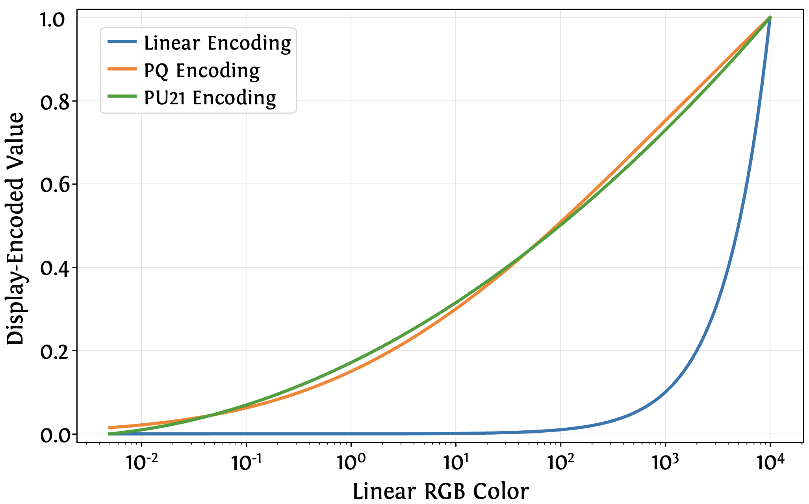
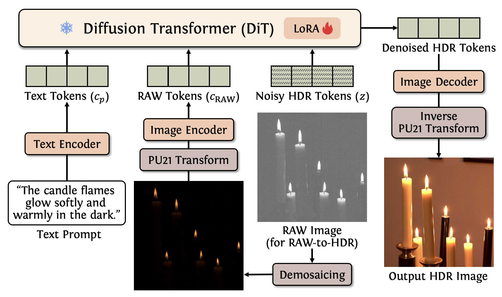

Qualitative results demonstrating the two modes supported by the proposed X2HDR.
Top: text-to-HDR generation, visualized with exposure-adjusted views at EV+4 and EV-4, highlighting synthesized detail across highlights and shadows.
Bottom: single-image RAW-to-HDR reconstruction. From over-exposed and under-exposed RAW inputs, X2HDR recovers HDR content by inpainting saturated regions and denoising/restoring detail in low-light areas.
Abstract
High dynamic range (HDR) displays and formats are becoming increasingly prevalent, yet state-of-the-art image generators (e.g., Stable Diffusion and FLUX) typically remain limited to low dynamic range (LDR) output due to the lack of large-scale HDR training data.
In this work, we show that existing pretrained diffusion models can be easily adapted to HDR generation without retraining from scratch. A key challenge is that HDR images are natively represented in linear RGB, whose intensity and color statistics differ substantially from those of sRGB-encoded LDR images. This gap, however, can be effectively bridged by converting HDR inputs into perceptually uniform encodings such as PU21 or PQ, yielding distributions closer to the LDR pretraining domain. Empirically, we find that variational autoencoders (VAEs) trained on LDR data reconstruct PU21-encoded HDR inputs with fidelity comparable to LDR reconstructions, whereas linear RGB inputs cause severe degradations.
Motivated by this finding, we describe a lightweight adaptation strategy that freezes the VAE and finetunes only the denoiser via low-rank adaptation in a perceptually uniform space. This results in a unified computational method that supports both text-to-HDR synthesis and single-image RAW-to-HDR reconstruction.
Experiments demonstrate that our perceptually encoded adaptation consistently improves image quality, text–image alignment, effective dynamic range, and HDR fidelity relative to prior exposure-generation methods.
How does it work?
X2HDR is a unified computational method for HDR image synthesis and reconstruction that adapts existing text-to-image (T2I) models with minimal modifications. The core challenge is a representation mismatch: pretrained models are trained on display-encoded LDR images, while HDR and RAW data are natively expressed in a linear radiometric space with dramatically different intensity statistics. X2HDR bridges this gap by operating entirely in a perceptually uniform domain.
Perceptually Uniform Encoding
To align HDR data with the LDR pretraining domain, we transform images into a perceptually uniform encoding (e.g., PU21 or PQ). This mapping compresses extreme highlights and reallocates precision toward shadows, reshaping HDR luminance statistics to better match natural image distributions.

Encoding functions (linear, PQ, and PU21) mapping BT.2100-range linear luminance to display-encoded values (with log-scaled x-axis).
This encoding allows VAEs pretrained on LDR data to reconstruct HDR inputs with fidelity comparable to standard LDR reconstructions, whereas linear HDR inputs induce severe artifacts. Consequently, the VAE can remain frozen, significantly simplifying the adaptation process.
Lightweight Diffusion Adaptation
We acquire HDR capability by finetuning only the diffusion denoiser using parameter-efficient LoRA adapters. This strategy allows the model to learn HDR-specific structures with minimal trainable parameters, keeping the base model intact and the inference architecture unchanged.

Overview of the proposed X2HDR framework.
Applications
Within the same framework, our method supports (but is not limited to) two tasks:
-
Text-to-HDR generation: Producing high-fidelity HDR images directly from text prompts with a wide effective dynamic range and smooth gradations in both highlights and shadows.
-
RAW-to-HDR reconstruction: Transforming a single RAW capture into an HDR output by leveraging generative priors to hallucinate missing content in saturated regions while suppressing noise in underexposed areas.
By operating in a perceptually uniform domain, X2HDR avoids the architectural complexity and fusion artifacts of traditional bracket-based HDR pipelines, offering a deployment-friendly solution for high-quality HDR content creation.